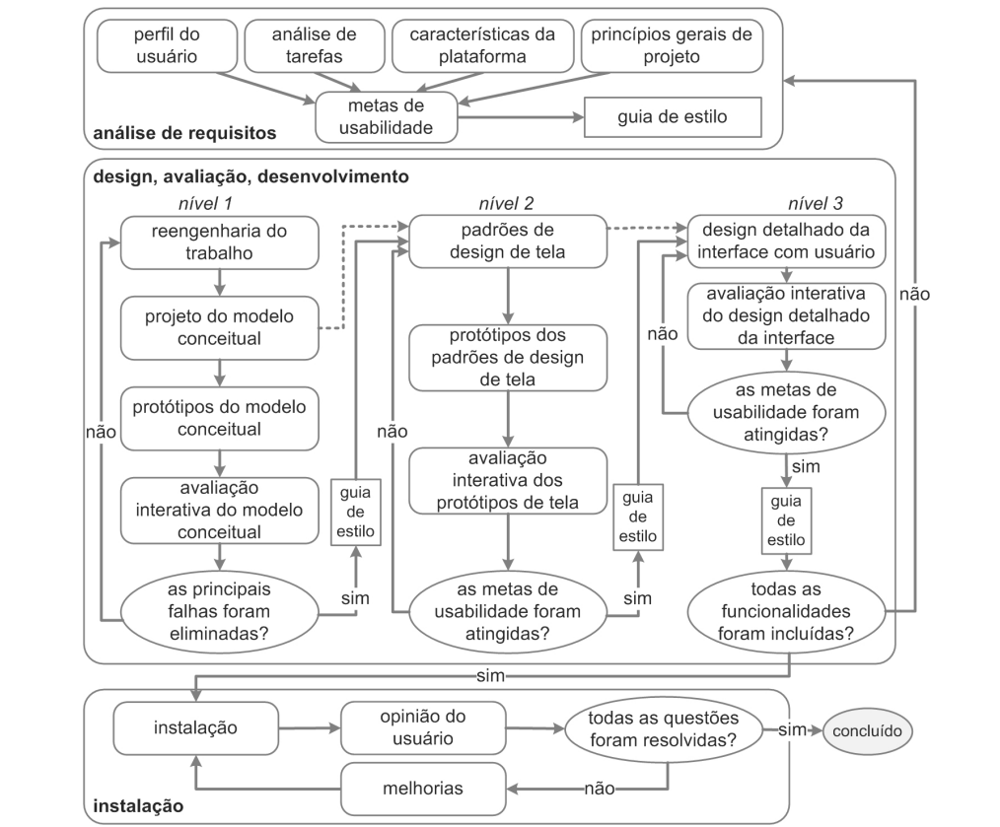

Processo de Design
1. Introdução
Um processo de design em Interação Humano-Computador (IHC) consiste em um conjunto de atividades básicas – análise, síntese e avaliação – que visa projetar sistemas interativos com alta qualidade de uso. Existem diversas propostas de ciclos de vida na literatura, como o Ciclo de Vida Simples, o Ciclo de Vida em Estrela e a Engenharia de Usabilidade de Nielsen.
Para a condução deste projeto focado na reestruturação do portal do Tribunal de Contas do Distrito Federal (TCDF), a equipe escolheu adotar o Ciclo de Vida da Engenharia de Usabilidade de Mayhew.
2. Escolha do Processo: Engenharia de Usabilidade de Mayhew
A decisão por utilizar a Engenharia de Usabilidade de Mayhew baseou-se em dois fatores principais:
- Recomendação Acadêmica e Didática: Conforme orientado pelo professor em sala de aula, o ciclo de Mayhew é considerado a melhor alternativa para equipes de estudantes e profissionais que estão tendo o primeiro contato prático com o ciclo de vida completo de IHC. Isso ocorre porque as etapas de Mayhew são extremamente bem detalhadas, autoexplicativas e guiadas passo a passo, reduzindo a margem de erro para quem nunca executou um projeto desse tipo antes.
- Alinhamento com o Cronograma: O fluxograma proposto por Mayhew divide-se em fases e níveis de detalhamento que espelham perfeitamente as avaliações e entregas exigidas no Plano de Ensino da disciplina (desde a análise do perfil de usuário até a avaliação de protótipos de alta fidelidade).
2.1 As Fases de Mayhew
O processo de Mayhew é dividido em três fases principais:
- Fase 1: Análise de Requisitos Envolve a definição das metas de usabilidade baseadas no perfil do usuário, na análise de tarefas, nas possibilidades e limitações da plataforma e nos princípios gerais de design.
- Fase 2: Design, Avaliação e Desenvolvimento
Esta é a fase iterativa. Ocorre em três níveis crescentes de fidelidade:
- Nível 1: Reengenharia do trabalho e prototipação do modelo conceitual (Baixa fidelidade).
- Nível 2: Estabelecimento de padrões de design de tela (Média fidelidade).
- Nível 3: Design detalhado da interface (Alta fidelidade). Ao fim de cada nível, os protótipos são avaliados para garantir o cumprimento das metas de usabilidade.
- Fase 3: Instalação Corresponde à etapa de coleta de feedback e opiniões dos usuários após o sistema ser implementado, buscando correções em novas atualizações.

Figura 1: Engenharia de Usabilidade de Mayhew. Fonte: BARBOSA e SILVA (2010).
3. Aplicação Prática no Projeto TCDF
A teoria de Mayhew será aplicada de forma pragmática ao longo do nosso projeto da seguinte maneira:
- Na Fase 1, a equipe realizará entrevistas e questionários para definir o Perfil de Usuário dos cidadãos do DF que utilizam o TCDF, estabelecendo metas de usabilidade claras.
- Na Fase 2, faremos o reprojeto (reengenharia) da interface do portal atual, criando primeiro um protótipo de papel (Nível 1) para validar a arquitetura da informação, e posteriormente evoluindo para um protótipo de alta fidelidade no Figma (Nível 3), sempre com avaliações heurísticas e testes com usuários reais a cada iteração.
4. Bibliografia
- BARBOSA, Simone Diniz Junqueira; SILVA, Bruno Santana da. Interação Humano-Computador. 1. ed. Rio de Janeiro: Elsevier, 2010.
5. Histórico de Versões
| Versão | Data | Descrição | Autor(es) | Revisor(es) |
|---|---|---|---|---|
1.0 |
06/09/2026 | Criação do documento de Processo de Design e definição da metodologia. | Daniel da Silva Batista | Pedro Rocha Ferreira Lima |